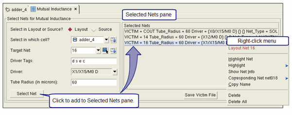

You can use Calibre
RVE for PEX to select nets and create the victim file for mutual
inductance. Choose Tools > Mutual
Inductance to open the Mutual Inductance tab.
Procedure
- Choose Tools > Mutual Inductance from the
main menu in Calibre RVE for PEX.
- Select “Layout” or “Source”
to select the victim net from the layout or schematic, respectively.
- Select a cell for the “Select
in which cell” entry. The target net is relative to this cell.
- Select the “Target Net” using
the dropdown list, or select in the layout by clicking
 .
.
- Verify the list of “Driver
Tags” used to identify drivers. To modify the current list, edit
the list and press Enter.
- Select a driver from the dropdown
list in the “Driver” field.
- Specify the “Tube Radius”
in microns. This specifies the radius of the tube around the victim
path.
- Click the Select
Net button.
This opens the
Selected Nets pane if it is not already opened, and populates it
with the victim information, as shown in Figure 1. See the SVRF command PEX Inductance Victim for detailed information.
You can right-click a victim
listing for a context and highlight menu, as shown in Figure 1.
- Repeat steps 3 through 8 as needed.
- Click Save Victim File in the Selected Nets
pane.
The victim file can be used
in the Calibre run by including it in the SVRF rule file with the Include command.
You can also specify the victim file in Calibre Interactive PEX;
see “Controlling Inductance Extraction”
in the Calibre Interactive User’s Manual.
Figure 1. Select Nets for Mutual Inductance